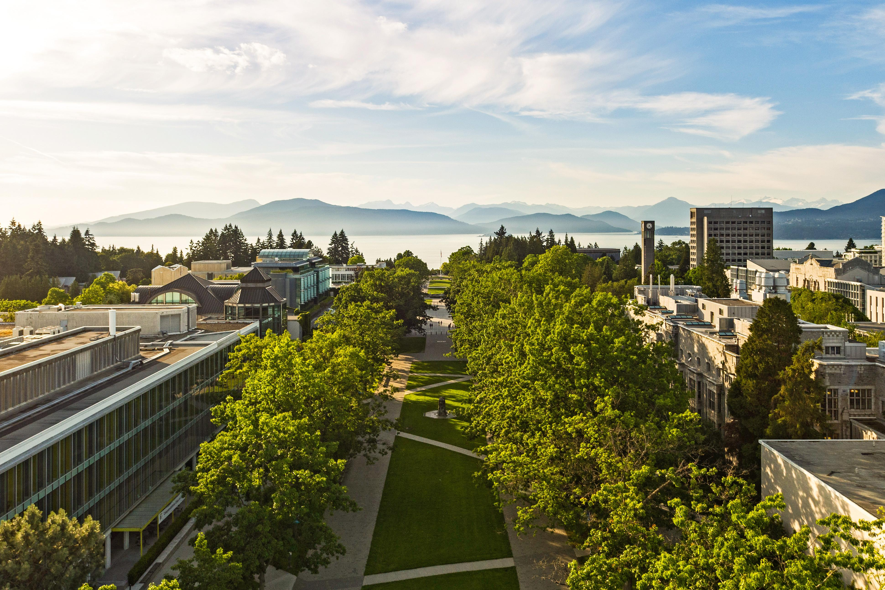
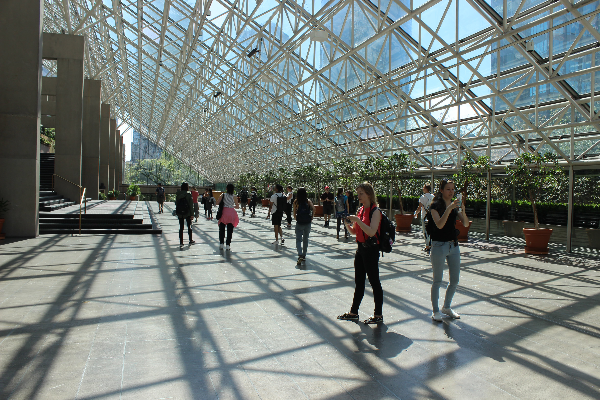
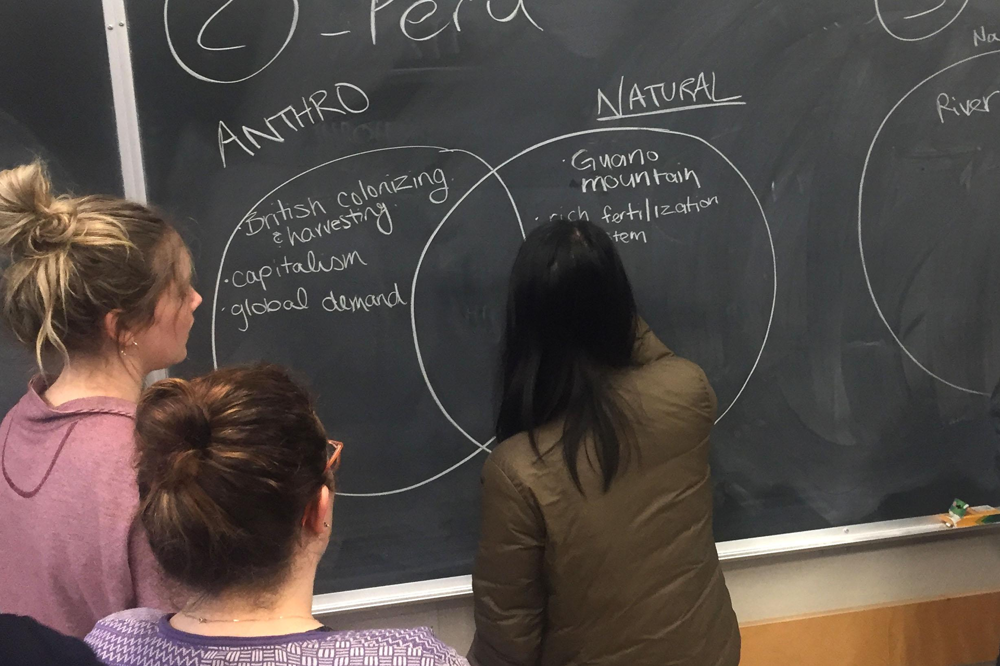
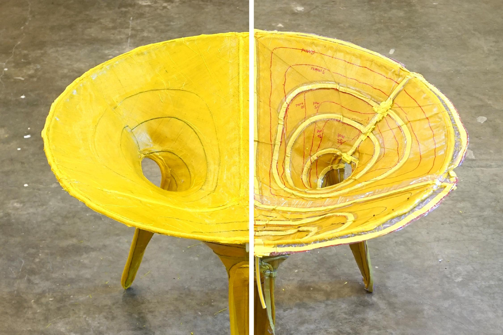
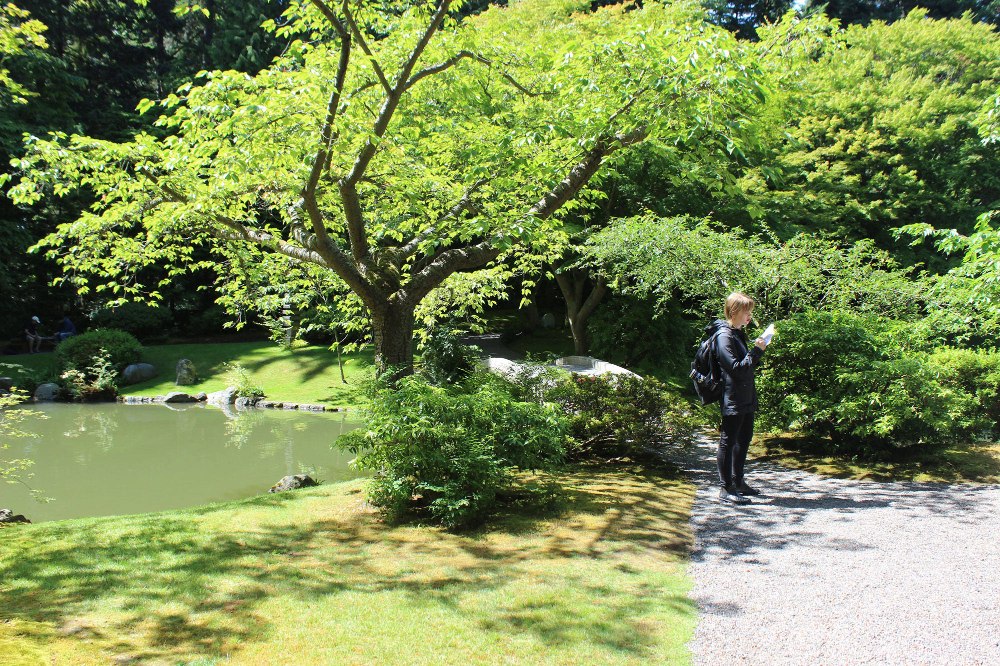

ABOUT SALA

SALA is the school of architecture and landscape architecture at the University of British
Columbia, located in Vancouver, situated on the traditional, ancestral and unceded territory of
the Musqueam people. Deeply committed to the quality of the built and natural environment,
we are a close-knit community of scholars, designers, and makers brought together by a
shared collaborative spirit.

Our undergraduate and graduate programs, led by an accomplished, multi-disciplinary faculty,
teach students to become creative leaders, effective collaborators, and progressive agents of
change. We established Canada’s first dual architecture-landscape architecture degree
program, breaking new collaborative ground. Beyond our professional degrees, program
options range from an exploratory workshop for those considering a career in design, to postprofessional
degrees for practitioners to gain a new set of skills.

Outside the studio, our students have a range of opportunities to connect with diverse
communities. Yearly study abroad courses provide an immersive international experience. An
increasingly-robust selection of design-build projects and co-op opportunities offer invaluable
hands-on experience. A long tradition of active student organizations is SALA’s social
heartbeat.

In addition to our significant contribution to education, research, and innovation within the
architecture, landscape architecture, and urban design professions, we award a major national
design prize each year to individuals who have shown extraordinary talent and dedication to
make Canada a better place to live.

Our campus and our city are ideal laboratories to respond to the urgent human and
environmental issues of our times. Our position on Canada’s west coast connects us to a
number of communities, from Cascadia to the Pacific Rim. Alumni and friends of our programs
have played pivotal roles in shaping Vancouver into an internationally recognized example of
sustainable urban design. Drawing on this history, we continue to prepare collaborative,
community-minded designers equipped to become leaders in the fields of the built and natural
environments.